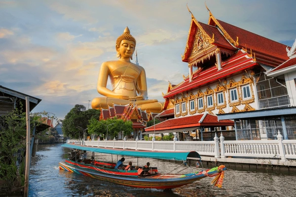
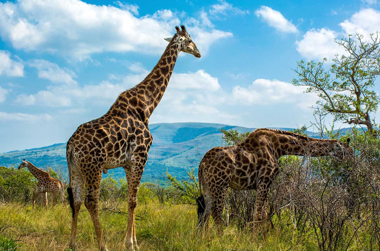

Nos Destinations
Explorez le monde avec nos destinations soigneusement sélectionnées
🇪🇺 Europe

Paris, France
Découvrez la ville lumière, ses musées prestigieux, sa tour Eiffel emblématique et sa gastronomie raffinée.
Durée : 4-7 jours
Meilleure période : Avril à Octobre

Rome, Italie
Plongez dans l'histoire de la ville éternelle : Colisée, Vatican, fontaines baroques et cuisine authentique.
Durée : 3-6 jours
Meilleure période : Mars à Mai, Septembre à Novembre

Santorin, Grèce
Couchers de soleil spectaculaires, villages blancs perchés sur la falaise et eaux cristallines de la mer Égée.
Durée : 5-8 jours
Meilleure période : Mai à Octobre

Barcelone, Espagne
Architecture unique de Gaudí, plages méditerranéennes, tapas délicieuses et vie nocturne animée.
Durée : 4-6 jours
Meilleure période : Avril à Juin, Septembre à Novembre
🌏 Asie

Tokyo, Japon
Métropole futuriste, temples ancestraux, cuisine raffinée et culture unique entre tradition et modernité.
Durée : 7-14 jours
Meilleure période : Mars à Mai, Septembre à Novembre

Bali, Indonésie
Rizières en terrasses, temples hindous, plages de rêve et spas traditionnels dans un paradis tropical.
Durée : 8-15 jours
Meilleure période : Avril à Octobre

Bangkok & Phuket, Thaïlande
Temples dorés, marchés flottants, cuisine épicée et plages paradisiaques aux eaux turquoise.
Durée : 10-15 jours
Meilleure période : Novembre à Mars

Rajasthan, Inde
Palais majestueux, désert du Thar, marchés colorés et spiritualité dans le pays des maharajas.
Durée : 12-21 jours
Meilleure période : Octobre à Mars
🌎 Amérique

New York, États-Unis
La ville qui ne dort jamais : gratte-ciels, Broadway, Central Park et melting-pot culturel unique.
Durée : 5-8 jours
Meilleure période : Avril à Juin, Septembre à Novembre

Machu Picchu, Pérou
Citadelle inca mystérieuse, cordillère des Andes et culture précolombienne fascinante.
Durée : 10-15 jours
Meilleure période : Avril à Octobre

Costa Rica
Biodiversité exceptionnelle, volcans actifs, forêts tropicales et plages des deux océans.
Durée : 12-18 jours
Meilleure période : Décembre à Avril

Québec & Ontario, Canada
Grandes étendues sauvages, chutes du Niagara, culture francophone et automne flamboyant.
Durée : 8-14 jours
Meilleure période : Mai à Octobre
🌍 Afrique

Marrakech & Essaouira, Maroc
Médinas labyrinthiques, jardins secrets, désert du Sahara et hospitalité berbère légendaire.
Durée : 8-12 jours
Meilleure période : Octobre à Avril

Safari Kenya
Big Five, migration des gnous, savanes infinies et rencontres avec les communautés Maasaï.
Durée : 10-15 jours
Meilleure période : Juin à Octobre

Cap & Kruger, Afrique du Sud
Vignobles réputés, safaris exceptionnels, paysages spectaculaires et culture rainbow nation.
Durée : 12-18 jours
Meilleure période : Novembre à Mars

Égypte Antique
Pyramides de Gizeh, trésors de Toutankhamon, croisière sur le Nil et temples pharaoniques.
Durée : 8-12 jours
Meilleure période : Octobre à Avril
Votre Destination de Rêve vous Attend
Contactez nos experts pour personnaliser votre voyage selon vos envies et votre budget.
Demander un devis personnalisé